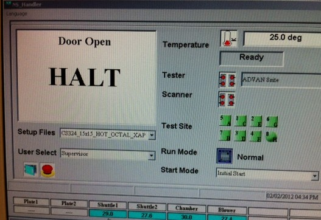
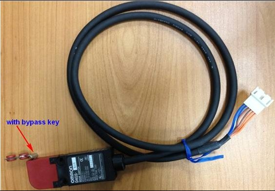

Service History
Subject: Xilinx NS-7080W NS7KW-08 Door Open error
Handler Model: NS-7080W (NS7KW-08)
Controller: RC520
Date: 2~3 Feb 2012
Symptom
Xilinx NS-7080W NS7KW-08 Door Open error.

Action
2 Feb 2012:
Check the following:
1) All doors able to close fully and no loose connection of door connectors. Ensure safety door key able to insert correctly into the Safety door switch
2) Ensure behind the Drive unit, the Emergency Connectors are connected fully.
3) In SPEL, check Input Bit 241 (Safety Door switch monitor) is ON when all doors are closed.
4) In SPEL, check Input Bit 252 (24V-2 monitor) is ON
5) Multimeter check that 24Vdc for door on XC911A, XC912A, XC913A, XC914A, XC915A and XC916A (see pg 1, Sheet No. SKH0755-A21)
6) Resistance check on the Safety door switch's connector wires(6 wires) XC911A, XC912A, XC913A, XC914A, XC915A and XC916A
7) Make sure breaker CB11 for 24V-1 is not trip(see wiring diagram pg 7, Sheet No. SKH0755-B01)
8) In MMI, change to other setup file.
3 Feb 2012:
Refer NS-7000 series Wiring Diagrams manual Rev.4, Page 1, Drawing No. Wiring 1, Sheet No. SKH0755-A21
For each of the connector(XC911A, XC912A, XC913A, XC914A, XC915A, XC916A), disconnect the connector.
Measure the resistance for the Safety Door switch connector side between the wires at the connector based on the table below:

|
OMRON D4GS-N4R Safety Door Switch |
||
|
|
Resistance WITHOUT bypass key |
Resistance WITH bypass key |
|
Blue & Blue-White wire |
Open circuit |
0 ~ 1.5 ohms |
|
Brown & Brown-White wire |
Open circuit |
0 ~ 1.5 ohms |
|
Orange & Orange-White wire |
Open circuit |
0 ~ 1.5 ohms |
The above is to check that each Safety Door Switch is functional and not faulty.
Did you check in SPEL, Input Bit 241 (Safety Door switch monitor) is ON when all doors are closed?
Customer informed door open error was due to rear left safety door switch key not insert fully in the safety switch.
Problem solved after realign the entire safety switch.
Cause
Misalignment of safety switch at rear door of NS-7080W.